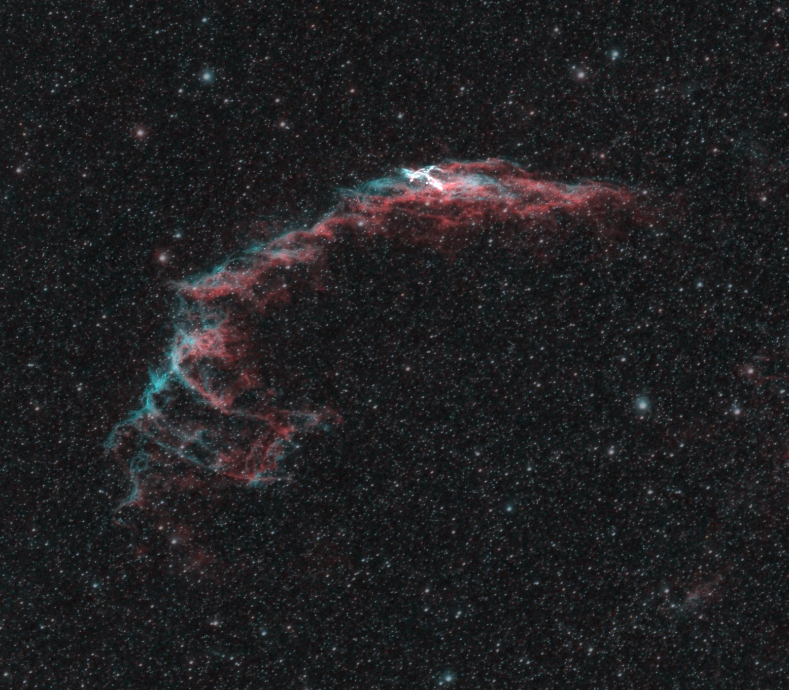
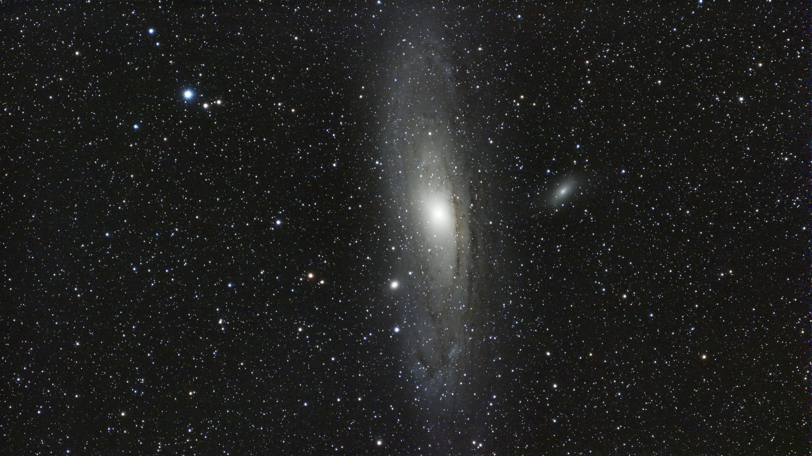
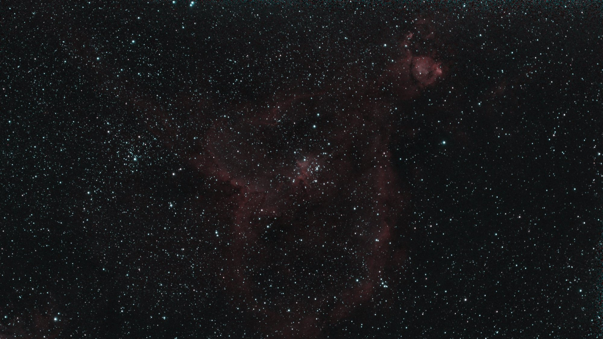

Gallery
Finished images
Every picture here was captured and processed automatically. Tap one to open the full image.
Gallery
Every picture here was captured and processed automatically. Tap one to open the full image.




